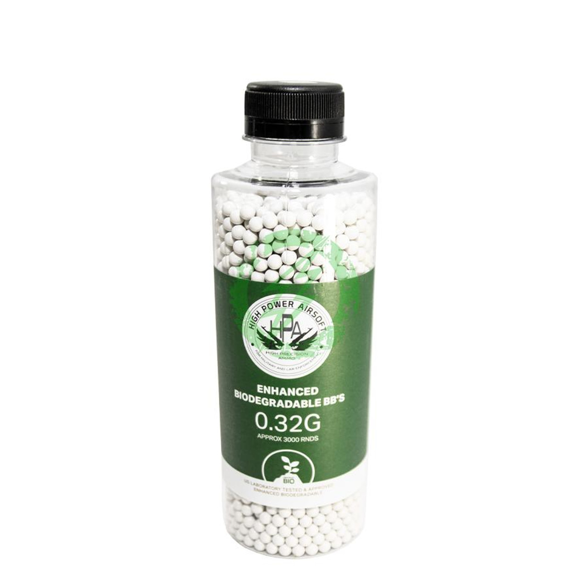

Marcadoras Primarias
Rifles de Asalto, Escopetas, Subfusiles, Francotiradores, tus armas principales y tus herramientas más confiables en el campo.
Ir al Catálogo
Marcadoras Secundarias
Cambiar a tu secundaria siempre es más rápido que recargar, tu arma secundaria es esa pistola que te va a salvar de un apuro cuando la munición te falte.
Ir al Catálogo

Consumibles
Munición, gas, baterías, todo lo que se gaste aquí lo vas a poder reponer.
Ir al CatálogoAccesorios
Buscas un silenciador para acercarte sin que te escuchen? Una linterna para ver en la oscuridad? Una mira reflex para apuntar más fácilmente? Aquí los puedes conseguir
Ir al Catálogo